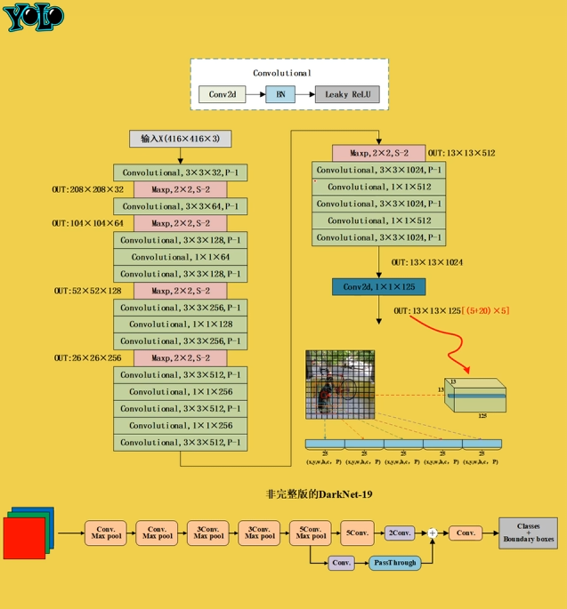
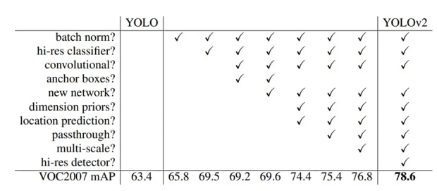
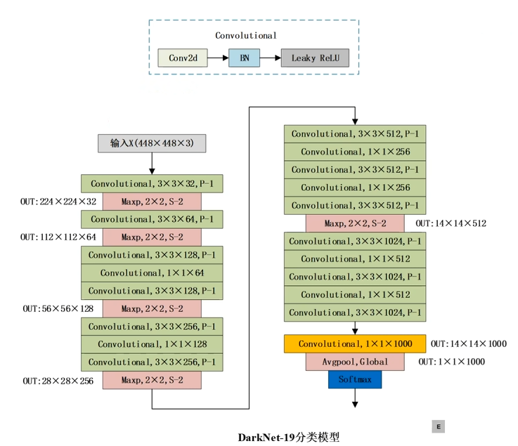
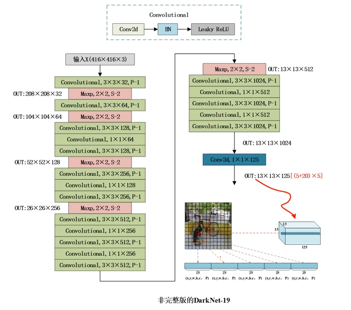
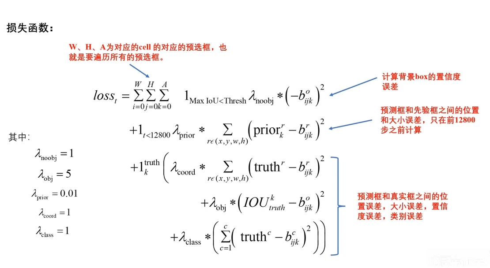
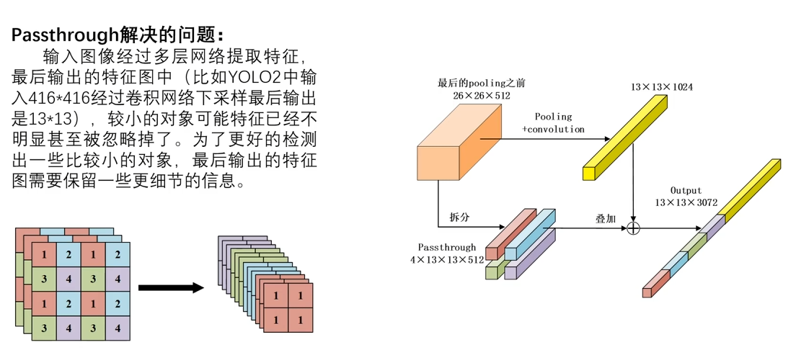
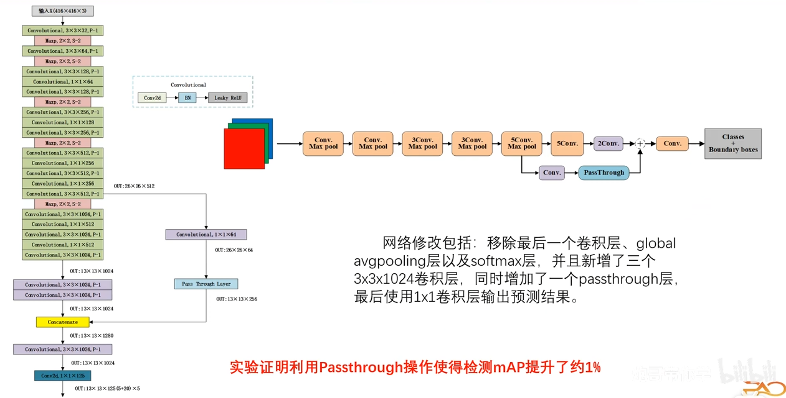

# YOLOv2
# 原文
YOLO9000: Better, Faster, Stronger(YOLOv2): [https://arxiv.org/abs/1612.08242]
YOLO-v2 相较于 v1，不仅准确率高，而且检测速度更快，mAP 指标由 63.4% 提升到 78.6%。
# V2 的改进
Batch Normalization - 批归一化 ：是深度学习中一种常用的技术，用于加速神经网络的训练并提高模型的稳定性。它通过对每一层的输入进行标准化处理来解决 “内部协变量偏移” 问题。
Hi-res classifier：Yolov2 相较于 Yolovl 采用更高分辨率的网络进行分类主干网络的训练。
Convolutional+anchor：Yolov2 相较于 Yolovl 去除全连接层，采用卷积层进行模型的输出；同时采用与锚框 (预选框) 进行 boundingbox 的预测
newnetwork：采用新的网络架构 Darknet-19
dimension priors：采用 k-means 聚类方法对训练集中的标准框做了聚类分析，获取 anchor boxes;
location prediction：使用 sigmoid 函数处理位置预测值。
passthrough：passthrough 网络模型的连接方式 (类似 resnet)
multi-scale：多尺度输入数据训练模型
hi-res detector：Yolov2 相较于 Yolovl 采用更高分辨率的网络进行检测主干网络的训练
# anchor box
在 YOLO v2 中，**Anchor 框（锚框 / 先验框）** 是这个算法的一项重大改进。如果说 “中心点” 决定了物体在哪个位置，那么 Anchor 框就决定了物体的 “体型” 和 “长相”。
在一开始，这 5 个 Anchor 框就长得不一样。它们不是随意生成的，而是根据数据统计出来的最典型的 5 种形状。
当图片输入模型时，每一个网格里的这 5 个 Anchor 都会去和真实物体比对：
- 计算重合度 IoU： 模型会计算真实物体的形状和这 5 个模板哪个最接近。
- 分配任务： 重合度 IoU 最高的那个 Anchor 被选为 “天选之子”，只有它负责预测这个物体。其他的 4 个 Anchor 在这个格子里就被当作 “背景” 忽略掉。
一旦选定了最像的那个框，它只针对选中的这一个进行修正。
虽然我们说是 “挑一个”，但在推理 / 预测阶段，其实 5 个框都会给出自己的分数（置信度）。只有那些得分超过你设定阈值的框才会被显示出来。如果一个格子里确实有两个重叠的物体，比如人挡住了车，那么负责人的 Anchor 和负责车的 Anchor 都会给出高分，这样两个物体就都能被挑出来！
# 流程描述
YOLOv2 把一张图分成 S × S 个 grid，每个 grid 预测 B 个候选框（anchor）。
每个候选框输出：
其中：
confidence = Pr(object) × IoU(pred, gt)p_c = Pr(class_c | object)
真正用于排序和筛选的是：
对同一类别来说，score 最大的那个框
| 因素 | 含义 |
|---|---|
| Pr(object) | 有没有目标 |
| IoU | 框得准不准 |
| Pr(class) | 是不是这个类别 |
# DarkNet-19 分类模型
# DarkNet-19 检测模型（非完整版）
# 凭什么 13x13 可以代表那些格子？
不是 YOLO 把图片 “切成了 13×13”，而是卷积网络在经过多次 stride=2 下采样后，只剩下 13×13 个空间位置可以说话。YOLO 的 grid 结构并非人为划分，而是全卷积网络在多次下采样后自然形成的空间离散化结果。
# 应当有 5 个锚框是如何得出的？
YOLOv2 使用 K-means 聚类来统计，K-means 聚类实际上是通过计算训练数据中每个目标框的 宽度 和 高度 来进行的，并且这些框的 中心点 被视为一个关键的参照来进行聚类。
每个训练样本的目标框通常由其 宽度 和 高度 组成。YOLOv2 并不会直接使用每个框的左上角坐标，而是将框的 宽度 和 高度 作为输入特征。
聚类的目的是找到一组能够很好地覆盖这些框的 中心点 和 尺寸。
K-means 聚类在选择锚框时使用的是 IoU，即交并比，来度量物体框与锚框之间的相似度。

对于每个训练集中的物体框，YOLOv2 会计算它与每个候选锚框的 IoU。物体框和锚框之间的 IoU 值越大，表示它们越相似。
聚类之后得到的 5 个框它们 不是拿来直接用的预测结果 而是用来 约束网络 “怎么预测框”，让回归问题变得容易、稳定、可学
K-means 聚类后，得到的是：
这 5 组 宽高比例只和 形状、尺度 有关，不含位置，这通常是相对于输入图像的比例
在 YOLO 模型中，网络会为每个目标预测四个偏移量：。通过以下公式，我们可以得到最终的边界框坐标：
：当前网格左上角的坐标（通常以网格大小为单位）。
：锚框的宽度和高度。这是预设好的参考基准，在公式中， 和 就是直接从锚框里拿出来的。后面乘个 e 的指数倍。
# YOLOv2 边界框预测 + 损失计算流程
# 跑完一遍输出
网络最后一层输出的张量：
- S×S = 网格数（比如 13×13）
- B = anchor 数，在 YOLOv2 里是 5
- 5 =
[t_x, t_y, t_w, t_h, t_{obj}] - C = 类别数
都是网络预测的偏移量（实数），还不是框的真实坐标。
# 解码为真实框
使用公式：
输出，这是相对整个输入图像真实框坐标，
# 匹配 ground-truth 框
训练时：
- 对每个 GT 框：
- 找到 IoU 最大的 anchor → 这个 anchor 来预测它
- 其它 anchor 忽略或当负样本
- 计算预测框 与 GT 框的误差
# 损失计算（v2 对比 v1）
YOLOv1 损失 = 边界框回归 + 置信度 + 分类损失
坐标偏移损失，这里直接在偏移量空间计算误差，而不是在转换后的像素空间
有物体置信度损失，如果这里有物体，模型预测的置信度应该接近它与真实目标的重合度。
无物体置信度损失。
分类损失，YOLO v2 在分类上也使用了均方误差，而后续版本改成了交叉熵。
有物体置信度损失和无物体置信度损失，像是模型里的 “安检员” 和 “纠错员”，它们共同解决目标：如何从成千上万个候选框中，把真正包含物体的那个找出来，并过滤掉背景。
在一张图中，背景框的数量远多于物体框。如果两者的权重一样，模型会发现，把所有框都预测成背景是最省力的做法，但其实这样并没有达到我们的预期。
因此，我们通常设置 较小例如 0.5，而 较大。这样即使背景框很多，它们产生的总梯度也不会完全淹没掉少数物体框带来的信号。
我们可以看到，有好多 ，总损失 是所有子损失的加权和，如果你发现模型框画得不准，就调大 ，模型通过误差反向传播，会告诉自己：下次把框往左挪点，胆子大一点，提高 分数，并且多看看猫的特征！
YOLOv2 损失 = 背景置信度损失 + 预热期 Anchor 匹配损失 + 有物体坐标损失 + 有物体置信度损失 + 分类损失

# 背景置信度损失 No-Object Loss
- 公式：，那么长一串核心就是这个，前面的都是一些条件。
- 含义：如果预测框与所有真实框的 IoU 都小于阈值（通常为 0.6），它就被判定为背景。
- 目标：强制该框的置信度 趋向 0，所以采用 0 减去它自己。
- 权重：。
# 预热期 Anchor 匹配损失 Prior Loss
- 公式：
- 含义：这是 YOLOv2 的特殊设计。在训练的前 12800 步，让预测框去拟合 Anchor Box 的原始形状。
- 作用：防止训练初期预测框乱跳，起到稳定模型的作用。过了这个阶段，这一项就消失了。
# 有物体坐标损失 Coordinate Loss
- 公式：
- 注意：这里的计算是在 空间（偏移量空间）进行的，即模型直接输出的数值与转化后的标签进行对比。
- 权重：。
# 有物体置信度损失 Object Loss
- 公式：
- 核心细节：
- 标签不是 1：这里使用的是预测框与真实框的 实际 IoU 作为学习目标。
- 高权重：。这反映了 YOLOv2 非常重视对真实目标的提取。
# 分类损失 Class Loss
- 公式：
- 计算方式：YOLOv2 依然使用了 MSE 均方误差，而不是后来版本常用的交叉熵。
# 总结
| 损失项 | 权重变量 | 推荐值 | 作用 |
|---|---|---|---|
| 背景置信度 | \lambda_ | 1 | 抑制误报 |
| 物体置信度 | \lambda_ | 5 | 提高召回率 |
| 坐标回归 | \lambda_ | 1 | 精准定位 |
| 分类概率 | \lambda_ | 1 | 类别判定 |
| Anchor 预热 | \lambda_ | 0.01 | 初期稳定训练 |
# passthrough
在 YOLOv2 架构中，Passthrough Layer 直通层 / 重组层是一个非常精妙的设计。它的核心目的是为了更好地检测微小物体。
# DarkNet-19 检测模型（完整版）
# 多尺度训练
多尺度训练是 YOLOv2 提出的一种非常聪明的训练技巧。它的核心思想是让模型在训练过程中不断看到不同分辨率的图片，从而增强模型对不同尺寸物体的鲁棒性。
模型不再依赖于物体的 “绝对像素大小”，而是学习物体的 “相对形状特征”。
# 参考
- 【YOLOv1、YOLOv2、YOLOv3 目标检测算法原理与实战】https://www.bilibili.com/video/BV1WT421r72w